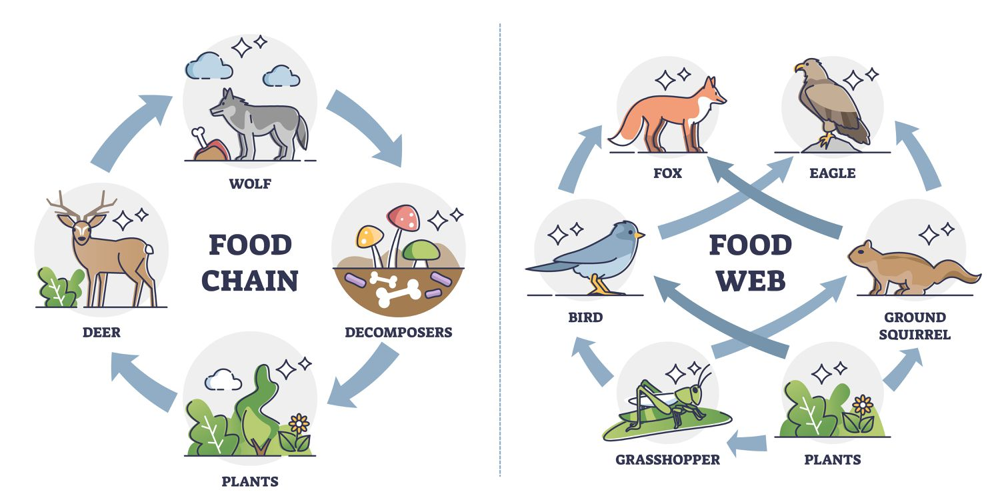

ecosystems
intro to ecosystems
Definitions
Organisms: Anything that is alive
Environment: Biotic & Abiotic factors
Habitat: The place where an organism lives
Abiotic: Non-living but contributing to an ecosystem. e.g temp.
Biotic: Living organisms e.g. plant
types of ecosystems
Individual: A singular organism.
Population: Multiple organisms of the same type (species) organism.
Community Multiple organisms of multiple species (biotic).
Ecosystem: Multiple organisms of multiple species with non-living items (abiotic & biotic).
Abiotic & Biotic
Abiotic Factors (non-living)
- Temperature
- Light
- pH (solid acidity)
- Water + Humidity
- Area Size
gaining energy
photosynthesis
Definition: Day only. Converts carbon dioxide and water into oxygen and glucose. (Glucose is used as food by the plant and oxygen is a by product).
Location: Occurs mainly in the chloroplasts (chlorophyll) of plant cells.
equation
$$6CO_2 + 6H_2O + \text{light} \rightarrow C_6H_{12}O_6 + 6O_2$$
$$\text{Carbon Dioxide} + \text{Water} + \text{Light} \rightarrow \text{Glucose} + \text{Oxygen}$$
Cellular Respiration
Definition: Anytime in the day. Cellular respiration is the process by which cells converts glucose and oxygen into energy (ATP), carbon dioxide, and water (water and carbon dioxide are by products).
Location: Occurs in the mitochondria of cells.
equation
$$C_6H_{12}O_6 + 6O_2 \rightarrow 6CO_2 + 6H_2O$$
$$\text{Glucose} + \text{Oxygen} \rightarrow \text{Carbon Dioxide} + \text{Water} + \text{ATP}$$
What is ATP?
ATP is the currency of energy. When it is used, it becomes ADP which is no longer 'energy.' Instead of getting new ATP every time they need energy, cells just breaks down glucose to add it to the ADP to turn it back to ATP.
Energy Transfer
Food Webs & Chains
Trophic Levels
- Apex Predators
- 4th Trophic Level, Secondary Carnivores, Tertiary Consumers
- 3rd Trophic Level, Carnivores, Secondary Consumers
- 2nd Trophic Level, Primary Consumers, Herbivores
- 1st Trophic Level, Producers
- Decomposers → (bacteria) What everything breaks down to when their dead.
Ecological Relationships
Symbiotic Relationships
Mutualism: Both Benefit
Commensalism: One Benefit, One not affected
Parasitism: One Benefit, One harm
Non-Symbiotic Relationships
Competition: Both harm (fighting for a mate or food etc.)